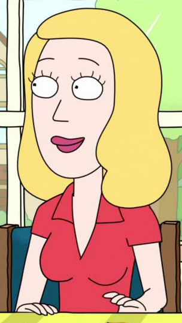

Rick Sanchez
Rick Sanchez (voz por Justin Roiland) Un genio científico, padre de Beth Sanchez y abuelo materno de Morty y Summer. Tiene 70 años .Es estadounidense de ascendencia británico-española-mexicana. Sus tendencias alcohólicas llevan a la familia de su hija a preocuparse por la seguridad de su hijo Morty. Exhibe "cualidades diagnosticables de varias enfermedades mentales". Extremadamente intelectual que ve su tiempo como valioso, menosprecia la utilidad de muchas convenciones humanas ordinarias tales como escuela, matrimonio, e incluso el amor. Tenía una esposa, se divorciaron y ella dejó a él con Beth de pequeña. Rick le teme a los piratas, le gusta el alcohol, las fiestas swinger, fumar con cigarillos o pipas, las sustancias tóxicas y prohibidas, las mujeres excesivamente bellas y la ciencia.
Rick Sanchez (voz por Justin Roiland) Un genio científico, padre de Beth Sanchez y abuelo materno de Morty y Summer. Tiene 70 años .Es estadounidense de ascendencia británico-española-mexicana. Sus tendencias alcohólicas llevan a la familia de su hija a preocuparse por la seguridad de su hijo Morty. Exhibe "cualidades diagnosticables de varias enfermedades mentales". Extremadamente intelectual que ve su tiempo como valioso, menosprecia la utilidad de muchas convenciones humanas ordinarias tales como escuela, matrimonio, e incluso el amor. Tenía una esposa, se divorciaron y ella dejó a él con Beth de pequeña. Rick le teme a los piratas, le gusta el alcohol, las fiestas swinger, fumar con cigarillos o pipas, las sustancias tóxicas y prohibidas, las mujeres excesivamente bellas y la ciencia.

Morty Smith
Sir Mortimer "Morty" Smith (voz por Justin Roiland);El nieto de 15 años de buen corazón, pero fácilmente manipulable, es frecuentemente arrastrado a las desventuras de Rick. A menudo es reacio a seguir los planes de Rick, y con frecuencia termina traumado por los métodos poco ortodoxos que Rick usa para "arreglar" situaciones. El Morty de C-137 es referido como "el Morty mas Morty" por Rick debido a su valor, que casi todos los demás Morty carecen debido a su uso principal son improvisados dispositivos de encubrimiento.
Sir Mortimer "Morty" Smith (voz por Justin Roiland);El nieto de 15 años de buen corazón, pero fácilmente manipulable, es frecuentemente arrastrado a las desventuras de Rick. A menudo es reacio a seguir los planes de Rick, y con frecuencia termina traumado por los métodos poco ortodoxos que Rick usa para "arreglar" situaciones. El Morty de C-137 es referido como "el Morty mas Morty" por Rick debido a su valor, que casi todos los demás Morty carecen debido a su uso principal son improvisados dispositivos de encubrimiento.
Beth Smith
Beth (Sanchez) Smith (voz de Sarah Chalke), hija de Rick, madre de Morty y Summer y esposa de Jerry. Es cirujana de caballos. Luchaba con el ego de su marido, que prospera desafiando su demostrada mediocridad. Quería convertirse en una "verdadera" cirujana, pero quedó embarazada de Summer a los 17. Ella es la fuerza más asertiva en su hogar, al tiempo que muestra rasgos de egoísmo, humor e inteligencia. No se perturba con las tendencias destructivas y peligrosas de su padre alrededor de su hijo. Ella, desde su infancia, ve a Rick más favorablemente que su madre debido a la separación de los padres. Harmon amplió este origen en una entrevista: "Los niños a veces pueden idolatrar a su peor padre y culpar a su padre que los apoya por perseguir al papá con las agallas para irse". Creé que Rick es el mejor de sus dos padres a pesar de que ella fue criada por su madre.
Beth (Sanchez) Smith (voz de Sarah Chalke), hija de Rick, madre de Morty y Summer y esposa de Jerry. Es cirujana de caballos. Luchaba con el ego de su marido, que prospera desafiando su demostrada mediocridad. Quería convertirse en una "verdadera" cirujana, pero quedó embarazada de Summer a los 17. Ella es la fuerza más asertiva en su hogar, al tiempo que muestra rasgos de egoísmo, humor e inteligencia. No se perturba con las tendencias destructivas y peligrosas de su padre alrededor de su hijo. Ella, desde su infancia, ve a Rick más favorablemente que su madre debido a la separación de los padres. Harmon amplió este origen en una entrevista: "Los niños a veces pueden idolatrar a su peor padre y culpar a su padre que los apoya por perseguir al papá con las agallas para irse". Creé que Rick es el mejor de sus dos padres a pesar de que ella fue criada por su madre.


Jerry Smith
Jerry Smith (Voz de Chris Parnell), El inseguro padre de Morty, ex-marido de Beth y yerno de Rick, desaprueba fuertemente la influencia de Rick sobre Morty. Su matrimonio se ve amenazado por las reacciones de su esposa a su pobre relación con Rick. Jerry trabajó en una agencia de publicidad de bajo nivel hasta que fue despedido por incompetencia. Beth se divorcia de Jerry.Se revela que era parte del plan de Rick para hacer que Jerry "se vaya" por su intento de vender a Rick.
Jerry Smith (Voz de Chris Parnell), El inseguro padre de Morty, ex-marido de Beth y yerno de Rick, desaprueba fuertemente la influencia de Rick sobre Morty. Su matrimonio se ve amenazado por las reacciones de su esposa a su pobre relación con Rick. Jerry trabajó en una agencia de publicidad de bajo nivel hasta que fue despedido por incompetencia. Beth se divorcia de Jerry.Se revela que era parte del plan de Rick para hacer que Jerry "se vaya" por su intento de vender a Rick.
Summer Smith
Summer Smith, La hermana mayor de Morty, una adolescente más convencional y a menudo superficial, obsesionada con cualquier cosa que pueda mejorar su estatus con sus compañeros. De vez en cuando expresa celos que Morty llega a acompañar a Rick en sus aventuras interdimensionales. En la segunda temporada, acompaña a Rick y Morty en aventuras con más frecuencia ya veces incluso demostrará ser más competente que Morty, especialmente cuando se requiere un matiz emocional. Summer es el único miembro de la familia que quiere rescatar a Rick a pesar de las súplicas de su hermano de que Rick no es más que un idiota egoísta. Después de que Rick regresa a casa en verano es feliz de que su abuelo volvió.